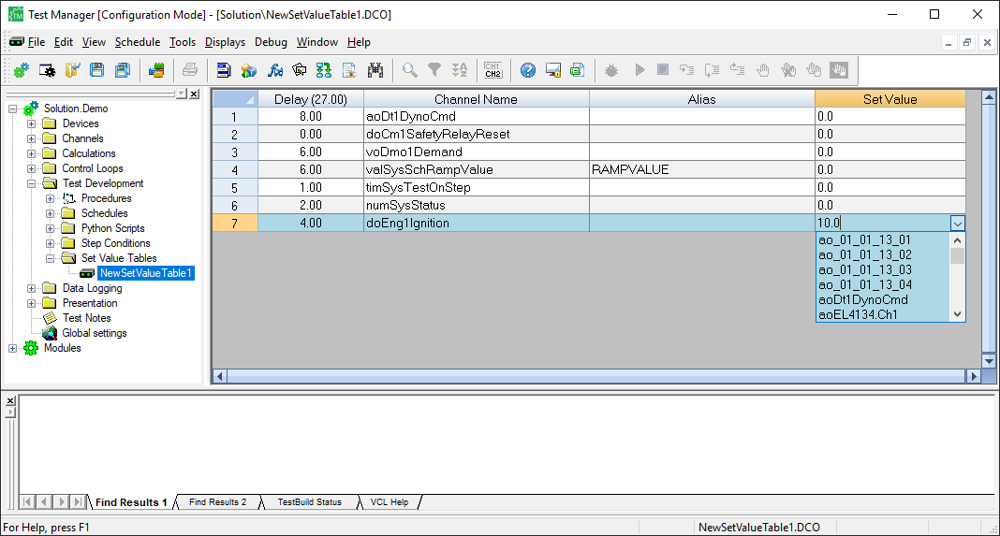
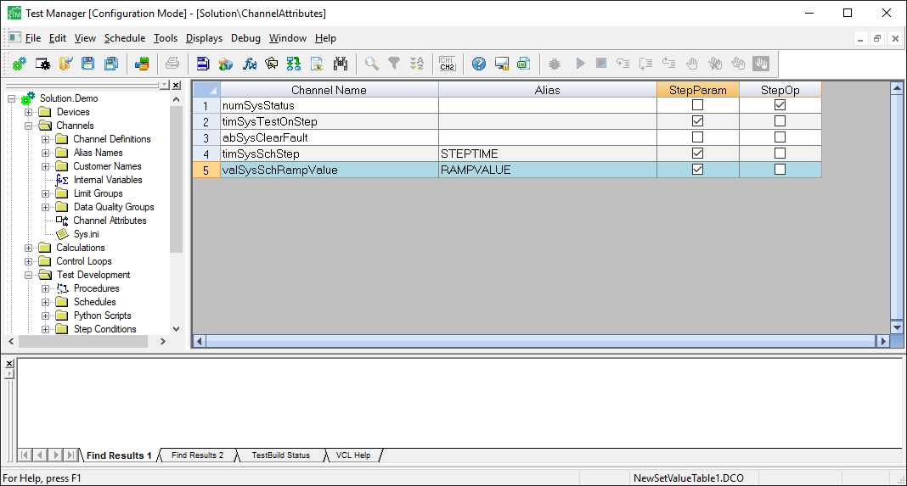

iTest User's Guide
Set Value Tables allow you to create a named sequence of values that change according to specified delay times. Programming experience is not necessary to create these tables because a comprehensive editor is used to define the delay time, channel name, customer name, and set value. You can use analog, digital, and virtual outputs in set value tables; however, virtual outputs require additional setup.
The following image is an example of a set value table in Test Manager:
Set Value Table Editor

Notes:
To use virtual output channels in your set value tables, some additional setup is required. You have to add the virtual output channel to the Channel Attributes editor and select the checkbox in the StepParam or StepOp columns. Once you do this, your virtual output channels can be selected in the Set Value Tables editor. For more information about the Channel Attributes editor, refer to the Managing Channel Attributes documentation.
Channel Attributes Editor
